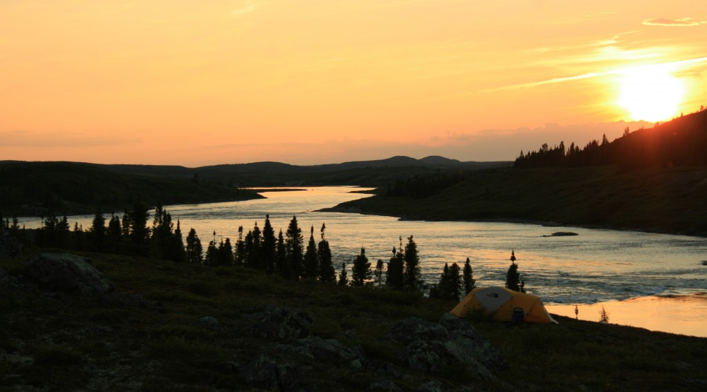

L’ensemble des activités que les gens développent lors de leurs voyages et séjours dans des lieux différents de leur environnement habituel est connu comme le tourisme. Les loisirs, les voyages d’affaires et la santé sont quelques-unes des motivations qui peuvent conduire un individu à organiser une activité touristique.
L’aventure, à son tour, est un événement étrange, une éventualité ou une entreprise risquée dont le résultat est incertain. Le terme provient du mot latin adventūra.
Ces deux concepts nous permettent d’aborder la notion de tourisme d’aventure. Il s’agit de l’activité touristique qui implique un voyage dans une région éloignée ou qui comprend un plan où des événements imprévus peuvent se produire. On peut dire que le tourisme d’aventure est un type de tourisme comme le tourisme culturel ou l’écotourisme.
La meilleure façon de comprendre le tourisme d’aventure est de le comparer avec le tourisme conventionnel, qui est justement le contraire. Si la majorité des voyageurs ont tendance à visiter les grandes villes ou à se prélasser sur la plage, les touristes d’aventure optent pour des vacances plus actives, y compris les sports extrêmes ou l’exploration de la nature.
La combinaison de trekking ou de randonnée avec camping (hébergement dans une tente) est une forme de tourisme d’aventure. D’autres options incluent des activités telles que le rafting, le surf, l’équitation ou l’alpinisme.

Il est important de noter que le tourisme d’aventure a pour but les loisirs à la différence du sport d’aventure qui tend à la compétition et qui nécessite un entraînement et une préparation plus exigeants.